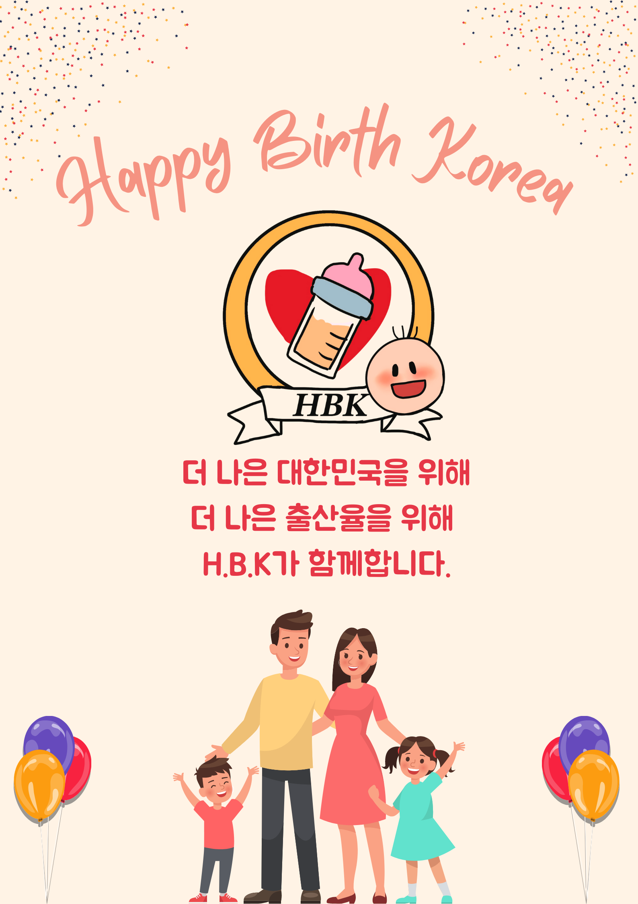

H.B.K는 2023년 ‘출산이 미래의 한국을 만든다’라는 정신으로 대한민국 출산율을 높이기 위해 설립된 민간단체이다. H.B.K는 전문가들과 수십 년 동안 함께 저출산에 대해 정보를 모아 왔고, 그 정보를 바탕으로 다양한 정책건의를 통해 더 편안하고 행복한 육아 활동을 위해 목소리를 내고 있다. 현 정책의 문제점을 파악해 새로운 정책들을 건의하면서 보다 나은 출산을 위해 노력하고 있다. 엄격히 선별된 선생님들과 함께 24시간 어린이집 운영으로 걱정 없이 아이를 맡길 수 있도록 최선을 다하고 있다. 또한 꾸준한 교육을 통해 출산에 대한 인식을 바꾸고 있다. 지금 이 순간에도 H.B.K 출산율을 올리기 위해 달리고 있다.
